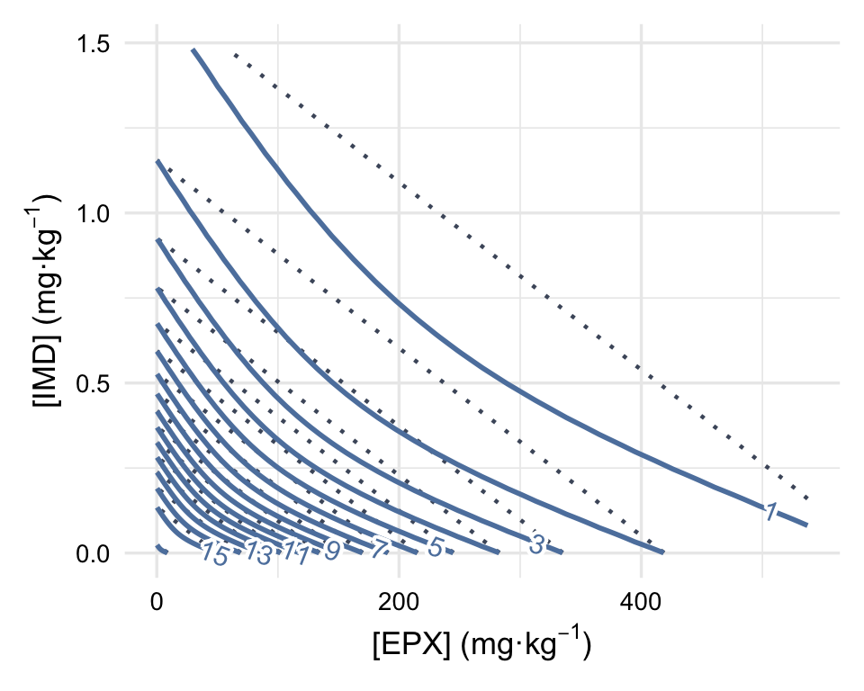

Code
Nb_rep <- 4
# Simulated interaction
interaction_a <- -1We want to investiguate what is the minimal interaction that can be estimated with a maximum error of 10% with such experimental design with 4 replicates and with simulated data following a Poisson distribution (reproduction data are count data).
Nb_rep <- 4
# Simulated interaction
interaction_a <- -1df_design <- read.csv(here::here("data/Design_mixture.csv"))
df_drc_param <- read.csv(here::here("data/DRC_parameters_cocoons_really_used.csv"))
slope <- df_drc_param$coef.drc.4.[1]
Y_max <- df_drc_param$coef.drc.4.[2]
EPX_EC50 <- df_drc_param$coef.drc.4.[3]
IMD_EC50 <- df_drc_param$coef.drc.4.[4]
y_min <- 0
C_mat = cbind(df_design$EPX,df_design$IMD)
Max = Y_max
Slopes = c(slope, slope)
Ec50s = c(EPX_EC50, IMD_EC50)We first calculate the theorical effect for each concentration combinations of our design.
# Calculation of effects for the design concentrations
res_CA_theorical_design <- CA_complete2(
C_mat,
Max, Slopes, Ec50s,
interact="SA",
a=interaction_a
)
# We add the corresponding response to our design
df_dose_rep <- df_design%>%
mutate(rep_Y=res_CA_theorical_design)
df_dose_rep <- df_dose_rep[,-c(1, 4)]# Graphic preparation : Construction of the surface mesh
min_dose_EPX <- min(subset(df_design, !EPX==0)$EPX)
max_dose_EPX <- max(subset(df_design, !EPX==0)$EPX)
min_dose_IMD <- min(subset(df_design, !IMD==0)$IMD)
max_dose_IMD <- max(subset(df_design, !IMD==0)$IMD)
by_EPX <- (log(max_dose_EPX)-log(min_dose_EPX))/100
by_IMD <- (log(max_dose_IMD)-log(min_dose_IMD))/100
# Créer une grille pour x et y en utilisant expand.grid
grid_C1 <- exp(seq(log(min_dose_EPX), log(max_dose_EPX), by = by_EPX))
grid_C2 <- exp(seq(log(min_dose_IMD), log(max_dose_IMD), by = by_IMD))
# length(grid_C1)
# length(grid_C2)
grid <- expand.grid(
x = grid_C1,
y = grid_C2
)
# Calculation of the response in the case of additivity (CA model - null hypothesis)
df_theorical_surf_CA <- CA_complete2(
C_mat=grid,
Max, Slopes, Ec50s,
interact="none",
multicore = TRUE
)
df_theorical_surf_CA_ordered <- df_theorical_surf_CA[order(grid[,2])]
z_CA <- matrix(
df_theorical_surf_CA_ordered,
nrow = length(grid_C1),
ncol = length(grid_C2),
byrow = FALSE
)
grid_CA <- expand.grid(x = grid_C1, y = grid_C2)
grid_CA$z <- as.vector(z_CA)
# Calculation of the response for all our mesh
df_theorical_surf_SA <- CA_complete2(
C_mat=grid,
Max, Slopes, Ec50s,
interact="SA",
a=interaction_a,
multicore = TRUE
)
df_theorical_surf_SA_ordered <- df_theorical_surf_SA[order(grid[,2])]
z_SA <- matrix(
df_theorical_surf_SA_ordered,
nrow = length(grid_C1),
ncol = length(grid_C2),
byrow = FALSE
)
grid_ThSurface_SA <- expand.grid(x = grid_C1, y = grid_C2)
grid_ThSurface_SA$z <- as.vector(z_SA)
# Surface coloration
# nrz <- nrow(z)
# ncz <- ncol(z)
# zfacet <- z[-1, -1] + z[-1, -ncz] + z[-nrz, -1] + z[-nrz, -ncz]
# nbcol <- 1000
# color = nord(palette = "frost", nbcol, alpha = 1, reverse = F)
# facetcol <- cut(zfacet, nbcol)target_effect <- 50
bin_contour <- 1
p <- ggplot() +
geom_contour(
data = grid_CA,
aes(x = x, y = y, z = z),
color = Nord_polar[4],
linewidth = 0.8,
linetype = "dotted",
binwidth = bin_contour
) +
geom_contour(
data = grid_ThSurface_SA,
aes(x = x, y = y, z = z),
color = Nord_frost[4],
linewidth = 1,
binwidth = bin_contour
) +
metR::geom_text_contour(
data = grid_ThSurface_SA,
aes(x = x, y = y, z = z),
stroke = 0.2,
size = 4,
color = Nord_frost[4],
skip = 1,
label.placer = label_placer_flattest(),
binwidth = bin_contour
) +
labs(
x = expression("[EPX] (mg·kg"^-1*")"),
y = expression("[IMD] (mg·kg"^-1*")")
) +
theme_minimal(base_size = 13) +
theme(
axis.title = element_text(face = "bold"),
axis.text = element_text(color = "black"),
plot.margin = margin(10, 10, 10, 10)
)
p
We can now simulate our data.
df_sim_data <- data.frame(
Y=c(),
EPX=c(),
IMD=c()
)
set.seed(12)
for(i in 1:length(df_dose_rep$EPX)){
Y_th <- df_dose_rep$rep_Y[i]
Y_sim <- rpois(Nb_rep, Y_th)
EPX <- rep(df_dose_rep$EPX[i], Nb_rep)
IMD <- rep(df_dose_rep$IMD[i], Nb_rep)
df_sim_data_i <- data.frame(
Y_th=rep(Y_th, Nb_rep),
Y_sim=Y_sim,
EPX=EPX,
IMD=IMD
)
df_sim_data <- rbind(df_sim_data, df_sim_data_i)
}param <- data.frame(Slopes=Slopes, Max=Max, Ec50s=Ec50s)
df_data_fit<-CA_complete2_fit_speed(
C_mat=cbind(
df_sim_data$EPX,
df_sim_data$IMD
),
Response=df_sim_data$Y_sim,
interact="SA",
param=param,
multicore = TRUE
)
# Log-likelihood of the model
LL_data_fit_SA <- df_data_fit$Errorres_a <- round(df_data_fit$a, 3)
ratio_interaction_a=round(df_data_fit$a/interaction_a, 3)The estimated interaction parameter \(a\) is -1.375.
df_res <- data.frame(`Simulated interaction parameter`=interaction_a,
`Estimated interaction parameter`=round(df_data_fit$a,3),
Ratio=ratio_interaction_a,
LL = LL_data_fit_SA)
df_res |> datatable(options = list(dom = 't'), class="hover") Step 3 - Graphical representation
df_data_solved_surf <- CA_complete2(
C_mat=grid,
Max=Max,
Slopes=Slopes,
Ec50s=Ec50s,
a=df_data_fit$a, interact="SA"
)
df_data_solved_surf_ordered <- df_data_solved_surf[order(grid[,2])]
z_SA_Est <- matrix(
df_data_solved_surf_ordered,
nrow=length(grid_C1),
ncol=length(grid_C2),
byrow=FALSE
)
grid_EstSurface_SA <- expand.grid(x = grid_C1, y = grid_C2)
grid_EstSurface_SA$z <- as.vector(z_SA_Est)target_effect <- 50
bin_contour <- 1
p <- ggplot() +
geom_contour(
data = grid_CA,
aes(x = x, y = y, z = z),
color = Nord_polar[4],
linewidth = 0.8,
linetype = "dotted",
binwidth = bin_contour
) +
geom_contour(
data = grid_ThSurface_SA,
aes(x = x, y = y, z = z),
color = Nord_frost[4],
linewidth = 1,
binwidth = bin_contour
) +
metR::geom_text_contour(
data = grid_ThSurface_SA,
aes(x = x, y = y, z = z),
stroke = 0.2,
size = 4,
color = Nord_frost[4],
skip = 1,
label.placer = label_placer_flattest(),
binwidth = bin_contour
) +
labs(
x = expression("[EPX] (mg·kg"^-1*")"),
y = expression("[IMD] (mg·kg"^-1*")")
) +
theme_minimal(base_size = 13) +
theme(
axis.title = element_text(face = "bold"),
axis.text = element_text(color = "black"),
plot.margin = margin(10, 10, 10, 10)
)
p
Nb_rep <- c(4)
tmp <- c(10, 7, 5, 2, 1)
l_interaction_a <- c(tmp, -rev(tmp))
Nb_pop <- 500
# res_focus <- f_power_design(Nb_rep, l_interaction_a, Nb_pop, param)
# save(res_focus,file = here::here("mod/MIX/Res_boot_design_new.RData"))
load(file = here::here("mod/MIX/Res_boot_design_new.RData"))
df_boot_res <- res_focusdf_boot_res_print <- df_boot_res |> mutate(
Per_error = round((Estimated_interaction - Simulated_interaction) / Simulated_interaction*100, 5),
Estimated_interaction = round(Estimated_interaction, 5),
Error = Estimated_interaction - Simulated_interaction
)
df_boot_res_line <- data.frame(Simulated_interaction = l_interaction_a,
Line = l_interaction_a)
# regarder erreur sur le signelibrary(bayestestR)
f_pdir <- function(df){
Nb_rep_unique = unique(df$Nb_rep)
Simulated_interaction_unique = unique(df$Simulated_interaction)
res <- data.frame(
Nb_rep = c(),
Simulated_interaction = c(),
P_direction = c())
for(Nb_rep_i in Nb_rep_unique){
for(Simulated_interaction_i in Simulated_interaction_unique){
p_dir <- p_direction(subset(df, Nb_rep == Nb_rep_i & Simulated_interaction == Simulated_interaction_i)$Estimated_interaction)
res_i <- data.frame(
Nb_rep = Nb_rep_i,
Simulated_interaction = Simulated_interaction_i,
P_direction = p_dir[2])
res <- rbind(res, res_i)
}
}
return(res)
}
df_boot_res_line <- df_boot_res_line |>
left_join(f_pdir(df_boot_res_print), by = join_by(Simulated_interaction))alpha_dens <- 0.5
p <- ggplot(
data = df_boot_res_print,
aes(x = Estimated_interaction)
)+
stat_halfeye(
adjust=0.5,
alpha=alpha_dens,
fill = Nord_polar[1]
)+
geom_vline(
data = df_boot_res_line,
aes(xintercept = Line),
color = Nord_frost[2],
size = 1.2
)+
geom_vline(
xintercept = 0,
color = Nord_frost[4],
size = 1.2
)+
geom_text(
data = df_boot_res_line,
aes(
x = Simulated_interaction-0.25,
y = 0.8,
label = paste("Pdirection = ", pd)
)
)+
facet_grid(
rows = vars(Simulated_interaction),
cols = vars(Nb_rep),
scales="free"
)+
# facet_wrap(
# ~ Nb_rep+Simulated_interaction,
# scales = "free"
# )+
#xlim(xmin=-50, xmax=50)+
labs(
x = "Estimated interaction",
y = "Density"
)+
#theme_minimal()+
theme(
strip.background = element_rect(fill=Nord_polar[1]),
strip.text = element_text(color="white", size = 14)
)
p
alpha_dens <- 0.5
p <- ggplot(
data = df_boot_res_print,
aes(
x = Per_error
)
)+
stat_halfeye(
adjust=0.5,
alpha=alpha_dens,
fill = Nord_polar[1]
)+
facet_grid(
rows = vars(Simulated_interaction),
cols = vars(Nb_rep),
scales="free"
)+
xlim(xmin=-50, xmax=50)+
labs(
x = "Percentage of error compared to the simulated value",
y = "Density"
)+
#theme_minimal()+
theme(
strip.background = element_rect(fill=Nord_polar[1]),
strip.text = element_text(color="white", size = 14)
)
p
df_boot_res_print_summary <- df_boot_res_print %>%
group_by(Simulated_interaction) %>%
summarise(
Per_error_above_10 = signif(mean(abs(Per_error) > 10) * 100, 3),
Per_error_above_25 = signif(mean(abs(Per_error) > 25) * 100, 3),
Per_error_above_50 = signif(mean(abs(Per_error) > 50) * 100, 3),
.groups = "drop"
)
df_boot_res_print_summary |> datatable(
options = list(
dom = 't',
autoWidth = TRUE,
columnDefs = list(
list(className = 'dt-left', targets = "_all")
)
),
class="hover"
) f_power_design <- function(Nb_rep, l_interaction_a, Nb_pop, param){
res <- data.frame()
for (Nb_rep_j in Nb_rep){
for (interaction_a_i in l_interaction_a){
print(interaction_a_i)
a_i <- interaction_a_i
# Calculation of the theorical response
res_CA_theorical_design_i <- CA_complete2(
C_mat,
Max, Slopes, Ec50s,
interact="SA",
a=a_i
)
# We add the corresponding response to our design
df_dose_rep_i <- df_design%>%
mutate(rep_Y=res_CA_theorical_design_i)
df_dose_rep_i <- df_dose_rep_i[,-c(1, 4)]
for(k in 1:Nb_pop){
set.seed(121212+k)
ID_pop <- k
# Population simulation
df_sim_data_k <- data.frame(
Y=c(),
EPX=c(),
IMD=c()
)
for(i in 1:length(df_dose_rep_i$EPX)){
Y_th <- df_dose_rep_i$rep_Y[i]
Y_sim <- rnorm(Nb_rep_j, Y_th, IV*Y_th)
EPX <- rep(df_dose_rep_i$EPX[i], Nb_rep_j)
IMD <- rep(df_dose_rep_i$IMD[i], Nb_rep_j)
df_sim_data_j <- data.frame(
Y_th=rep(Y_th, Nb_rep_j),
Y_sim=Y_sim,
EPX=EPX,
IMD=IMD
)
df_sim_data_k <- rbind(df_sim_data_k, df_sim_data_j)
}
# Fit of the model
res_CA_SA_fit_k<-CA_complete2_fit_speed(
C_mat=cbind(
df_sim_data_k$EPX,
df_sim_data_k$IMD
),
Response=df_sim_data_k$Y_sim,
interact="SA",
param=param
)
res_a_k <- res_CA_SA_fit_k$a
res_k <- data.frame(
Simulated_interaction = a_i,
Estimated_interaction = res_a_k,
ID_pop = ID_pop,
Nb_rep = Nb_rep_j
)
res <- rbind(res, res_k)
}
print("Calculations done for given interaction")
}
print("Calculations done for given Nb_rep")
}
return(res)
}sessionInfo()R version 4.2.2 (2022-10-31)
Platform: aarch64-apple-darwin20 (64-bit)
Running under: macOS 15.6.1
Matrix products: default
BLAS: /Library/Frameworks/R.framework/Versions/4.2-arm64/Resources/lib/libRblas.0.dylib
LAPACK: /Library/Frameworks/R.framework/Versions/4.2-arm64/Resources/lib/libRlapack.dylib
locale:
[1] en_US.UTF-8/en_US.UTF-8/en_US.UTF-8/C/en_US.UTF-8/en_US.UTF-8
attached base packages:
[1] stats4 parallel stats graphics grDevices utils datasets
[8] methods base
other attached packages:
[1] data.table_1.15.4 extrafont_0.19 latex2exp_0.9.6
[4] plan_0.4-5 modelsummary_2.2.0 see_0.8.4.3
[7] report_0.5.8 parameters_0.22.2 performance_0.12.0
[10] modelbased_0.8.8 insight_0.20.4 effectsize_0.8.8
[13] datawizard_0.11.0 correlation_0.8.5 bayestestR_0.13.2
[16] easystats_0.7.2 drc_3.0-1 fdrtool_1.2.17
[19] tmvtnorm_1.6 gmm_1.8 sandwich_3.1-0
[22] Matrix_1.6-5 deSolve_1.40 multcomp_1.4-25
[25] TH.data_1.1-2 MASS_7.3-58.1 survival_3.7-0
[28] mvtnorm_1.2-5 brglm2_0.9.2 marginaleffects_0.21.0
[31] ggpubr_0.6.0 lsmeans_2.30-0 emmeans_1.10.3
[34] nlstools_2.1-0 car_3.1-2 carData_3.0-5
[37] truncnorm_1.0-9 bayesnec_2.1.2.0 coda_0.19-4.1
[40] priorsense_1.0.4 rethinking_2.40 posterior_1.6.0
[43] ggmcmc_1.5.1.1 tidybayes_3.0.6 cmdstanr_0.8.0
[46] rstan_2.32.6 StanHeaders_2.32.9 brms_2.22.0
[49] Rcpp_1.0.14 colorspace_2.1-0 scales_1.3.0
[52] sf_1.0-16 rnaturalearth_1.0.1 metR_0.18.0
[55] processx_3.8.4 gt_0.10.1 flextable_0.9.6
[58] kableExtra_1.4.0 ggtext_0.1.2 ggbreak_0.1.2
[61] gridExtra_2.3 patchwork_1.2.0 ggrepel_0.9.5
[64] ggiraph_0.8.10 plotly_4.10.4 nord_1.0.0
[67] RColorBrewer_1.1-3 wesanderson_0.3.7 viridis_0.6.5
[70] viridisLite_0.4.2 ggsci_3.2.0 ggdist_3.3.2
[73] ggthemes_5.1.0 knitr_1.47 DT_0.33
[76] reshape2_1.4.4 readxl_1.4.3 lubridate_1.9.3
[79] forcats_1.0.0 stringr_1.5.1 dplyr_1.1.4
[82] purrr_1.0.2 readr_2.1.5 tidyr_1.3.1
[85] tibble_3.2.1 ggplot2_3.5.1 tidyverse_2.0.0
[88] here_1.0.1
loaded via a namespace (and not attached):
[1] estimability_1.5.1 GGally_2.2.1 ragg_1.3.2
[4] enrichwith_0.3.1 inline_0.3.19 generics_0.1.3
[7] terra_1.8-50 proxy_0.4-27 tzdb_0.4.0
[10] xml2_1.3.6 httpuv_1.6.15 xfun_0.45
[13] jquerylib_0.1.4 hms_1.1.3 bayesplot_1.11.1
[16] evaluate_0.24.0 promises_1.3.0 fansi_1.0.6
[19] DBI_1.2.3 htmlwidgets_1.6.4 tensorA_0.36.2.1
[22] crosstalk_1.2.1 backports_1.5.0 fontLiberation_0.1.0
[25] V8_4.4.2 RcppParallel_5.1.7 fontBitstreamVera_0.1.1
[28] vctrs_0.6.5 abind_1.4-5 cachem_1.1.0
[31] withr_3.0.0 chk_0.9.1 checkmate_2.3.1
[34] svglite_2.1.3 lazyeval_0.2.2 crayon_1.5.3
[37] crul_1.4.2 labeling_0.4.3 pkgconfig_2.0.3
[40] units_0.8-5 nlme_3.1-160 nnet_7.3-19
[43] rlang_1.1.4 lifecycle_1.0.4 fontquiver_0.2.1
[46] httpcode_0.3.0 extrafontdb_1.0 cellranger_1.1.0
[49] distributional_0.4.0 rprojroot_2.0.4 matrixStats_1.3.0
[52] aplot_0.2.3 loo_2.8.0 zoo_1.8-12
[55] KernSmooth_2.23-24 shape_1.4.6.1 classInt_0.4-10
[58] rstatix_0.7.2 gridGraphics_0.5-1 ggsignif_0.6.4
[61] memoise_2.0.1 magrittr_2.0.3 plyr_1.8.9
[64] compiler_4.2.2 rstantools_2.4.0 plotrix_3.8-4
[67] cli_3.6.3 ps_1.7.6 Brobdingnag_1.2-9
[70] tidyselect_1.2.1 stringi_1.8.4 textshaping_0.4.0
[73] yaml_2.3.8 askpass_1.2.0 svUnit_1.0.6
[76] bridgesampling_1.1-2 grid_4.2.2 sass_0.4.9
[79] ggstats_0.6.0 tools_4.2.2 timechange_0.3.0
[82] rstudioapi_0.16.0 uuid_1.2-0 tables_0.9.28
[85] farver_2.1.2 digest_0.6.36 shiny_1.8.1.1
[88] gfonts_0.2.0 operator.tools_1.6.3 gridtext_0.1.5
[91] broom_1.0.6 later_1.3.2 httr_1.4.7
[94] gdtools_0.3.7 QuickJSR_1.2.2 fs_1.6.4
[97] splines_4.2.2 yulab.utils_0.1.7 ggplotify_0.1.2
[100] systemfonts_1.1.0 xtable_1.8-4 jsonlite_1.8.8
[103] ggfun_0.1.6 formula.tools_1.7.1 R6_2.5.1
[106] pillar_1.9.0 htmltools_0.5.8.1 mime_0.12
[109] glue_1.7.0 fastmap_1.2.0 class_7.3-22
[112] codetools_0.2-20 pkgbuild_1.4.4 utf8_1.2.4
[115] bslib_0.7.0 lattice_0.22-6 numDeriv_2016.8-1.1
[118] arrayhelpers_1.1-0 curl_5.2.1 gtools_3.9.5
[121] officer_0.6.6 Rttf2pt1_1.3.12 zip_2.3.1
[124] openssl_2.2.0 rmarkdown_2.27 munsell_0.5.1
[127] e1071_1.7-16 gtable_0.3.5